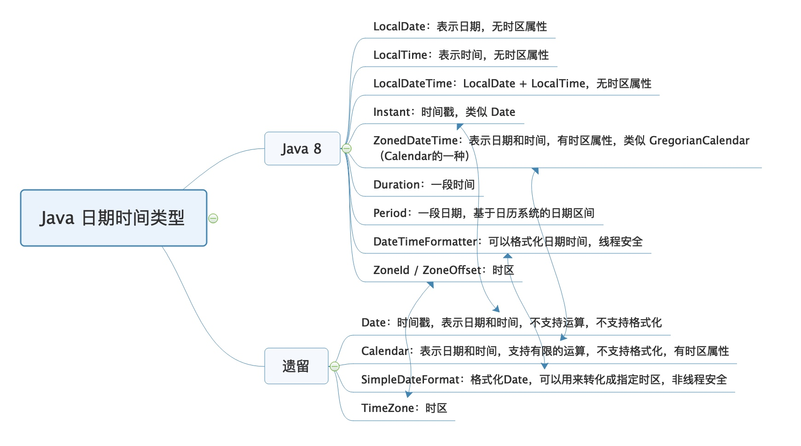

Copyright © 2015 Powered by MWeb, Theme used GitHub CSS.
使用 Java 8 中的日期时间包 Java.time 的类进行各种操作，会比使用遗留的 Date、Calender 和 SimpleDateFormat 更简单、清晰，功能也更丰富、坑也比较少。 建议全面改为使用 Java 8 的日期时间类型。 这里有个误区是，认为 java.util.Date 类似于新 API 中的 LocalDateTime。其实不是，虽然它们都没有时区概念，但 java.util.Date 类是因为使用 UTC 表示，所以没有时区概念，其本质是时间戳；而 LocalDateTime，严格上可以认为是一个日期时间的表示，而不是一个时间点。因此，在把 Date 转换为 LocalDateTime 的时候，需要通过 Date 的 toInstant 方法得到一个 UTC 时间戳进行转换，并需要提供当前的时区，这样才能把 UTC 时间转换为本地日期时间（的表示）。反过来，把 LocalDateTime 的时间表示转换为 Date 时，也需要提供时区，用于指定是哪个时区的时间表示，也就是先通过 atZone 方法把 LocalDateTime 转换为 ZonedDateTime，然后才能获得 UTC 时间戳：
Date in = new Date();
LocalDateTime ldt = LocalDateTime.ofInstant(in.toInstant(), ZoneId.systemDefault());
Date out = Date.from(ldt.atZone(ZoneId.systemDefault()).toInstant());
很多同学说使用新 API 很麻烦，还需要考虑时区的概念，一点都不简洁。但我通过这篇文章要和你说的是，并不是因为 API 需要设计得这么繁琐，而是 UTC 时间要变为当地时间，必须考虑时区。 
Copyright © 2015 Powered by MWeb, Theme used GitHub CSS.